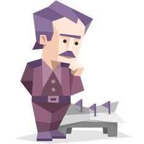
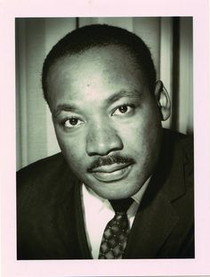
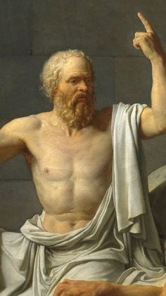

INTJ

Strategic thinkers with a clear plan.
strength point:
- Analytical
- strategic
- smart
- independent
Weaknesses:
- A little emotional
- arrogant
- stubborn
INTP
Creative thinkers who love theories and ideas.
strength point:
- creative
- thinker
- Analytical
- independent
Weaknesses:
- unpractical
- deprecatory
- Isolated
ENTJ
Decisive leaders who find solutions.
strength point:
- leader
- Decisive
- strategic
- Charismatic
Weaknesses:
- stubborn
- Insensitive
- Impatient
ENTP
Intelligent debaters who love intellectual challenges.
strength point:
- smart
- Innovative
- Charismatic
- adventurer
Weaknesses:
- controversial
- Insensitive
- impulsive

INTJ sees the world as a chessboard, so every step he takes is a perfect goal for him according to his own strategy. There are two types of INTJ personality: there is the assertive INTJ and another type, which is somewhat disturbed, and this is the difference between INTJ-A and INTJ-T, as the two types differ somewhat. INTJ-A, the assertive INTJ personality, is characterized by difficulty entering into personal relationships, because he does not like commitment. Unlike the troubled engineer, we can say that he is better at dealing and getting along with his passion partner.
INTP is a rational, independent, reserved, and curious personality.
An architect likes to focus on ideas, theories and how things work.
He is extremely adept at discussing and arguing. The architect is distinguished by the ability to focus on one work, and appreciates and respects the intelligence of others.
He does not like to drive or be led by others.
Personal tendencies: introverted, intuitive, rational, and indulgent. The percentage of architects, according to a study conducted on a sample of the American population, ranges between 3-5%.
ENTJ is strategic, organized, and naturally possesses management skills.
he is the best person to work in the field of coordination and direction of groups.
He is frank and will not find anything preventing him from expressing ideas to develop his workplace and push it for the better.
The Chief of Staff is decisive, appreciative of information, and competent. Personal tendencies: extrovert, intuitive, rational, and strict. He is one of the rationalists according to Cressey's theory of temperaments. The percentage of people who are characterized by these personality traits, according to a study conducted on a sample of the American population, ranges between 2-5%.

ENTPs the inventor constantly sees opportunities to improve things, and has the ability to understand and comprehend the most difficult things.
He is independent in his opinion,and loves to discuss and defend his ideas.
He is very excited to get new ideas and projects, and his enthusiasm may lead him to ignore the matters of his daily life.